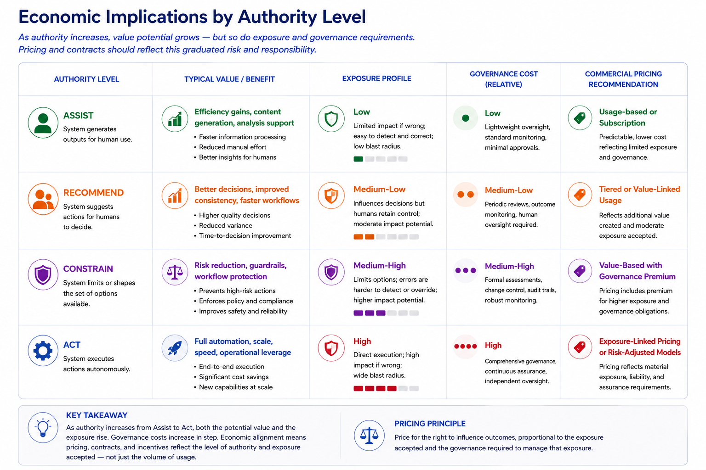

7 — ECONOMIC IMPLICATIONS OF AUTHORITY GOVERNANCE
The Expansion Imperative
Earlier sections have shown that authority grows because each small step seems justified on its own. A system already has access to data, so it makes sense to extend that access to a nearby data source. A system already recommends actions, so it seems logical to let it carry out low-risk ones. A system already manages routine cases, so expanding it to similar workflows also seems reasonable.
Market forces strengthen this trend. Organisations that successfully grow their authority lower their operating costs, speed up their cycle times, and improve their throughput. Competitors see these results and feel pressured to keep up. The market rewards expansion with higher capital valuations, better rankings, and a competitive edge. As a result, expanding authority often becomes hard to resist.
The Economic Invisibility Problem
This is where an important insight arises: authority expansion creates both value and exposure, but current economic models tend to focus on the value.
The value of expansion is clear and immediate. A system that takes action directly cuts operating costs. Lower costs show up on balance sheets. Improvements in efficiency appear in quarterly results. Competitors' expansion sets expectations for investors.
The exposure that comes with expansion is real but often goes unnoticed until a crisis occurs.
To understand why this may happen, let's revisit the value relationship mentioned earlier:
$$AI\ Value ≈ (Outcome_{with\ AI} - Outcome_{without\ AI}) \times Context$$
The value equation does not directly account for exposure. However, in practice, achieving bigger outcome improvements often needs broader authority, deeper integration into workflows, and more dependence on the system within the organisation. Thus, value creation and exposure often rise together, even though they are not the same thing.
A system that makes more decisions needs stronger governance. Governance adds costs, such as review processes, oversight roles, technical controls, and audit requirements. These costs are real but can easily be postponed. An organisation can expand authority today and handle governance costs later, when exposure becomes undeniable.
A system that carries out more actions opens up the possibility for larger failures. That failure exposure can be measured but is not certain. Organisations can justify the risk: the likelihood is low, the controls are enough, and the exposure is manageable.
This creates a consistent bias toward expansion. The benefits are immediate and measurable, while the costs are spread out and can be delayed. Exposure is based on probability and is often underestimated.
As a result, authority tends to grow to the limits of organisational risk tolerance, rather than the limits of governance capability. Authority expands until exposure becomes critical, not before.
This is not a judgment error but a visibility issue. The economic reasoning behind authority expansion is incomplete. Organisations cannot make informed trade-offs between value and exposure when exposure remains hidden.
Exposure as an Economic Object
The main issue is that organisations view authority expansion as a technical or operational choice, rather than an economic one. This exposure can lead to financial loss, disruptions in operations, regulatory issues, or damage to reputation.
A system's authority level, therefore, is an economic factor that affects both the value it can generate and the exposure the organisation faces.
A system at Assist is a tool for productivity. Its value increases with throughput and user adoption. Its exposure is limited: the system produces outputs while humans are accountable for outcomes.
A system at Recommend influences human decisions. Its value can be much greater, as it can reduce poor decisions on a large scale, improve decision quality, or speed up decision-making. However, its exposure is also significantly higher: the system's recommendations guide human judgment, and mistakes in recommendations lead to systematic errors in decisions.
A system at Constrain determines what information humans can access. Its value can be groundbreaking, as it affects what decisions are possible, not just what decisions get made. Its exposure is also transformative: the system becomes part of the infrastructure. Failures in the system are infrastructure failures that impact entire workflows, rather than just individual decisions.
A system at Act operates on its own. Its value comes from removing human judgment entirely for specific types of decisions. Its exposure is at its highest: the organisation takes on responsibility for outcomes beyond its direct control.
These are not just differences in degree. They represent differences that can significantly affect organisations, particularly in terms of reputation and trust. Yet these distinctions often do not show up in commercial valuations, risk assessments, and pricing arrangements.
The result is misalignment. Organisations expand authority to gain value but do not take into account the exposure they are assuming. Vendors increase authority to boost revenue but fail to consider the exposure they bring into the buyer’s organisation.
Authority as Both Governance and Economic Object
Authority governance is essentially a design challenge that has economic effects. The main question is how to distribute influence between systems and humans as capabilities grow. The expansion of authority depends not just on what technology can do but also on economic motivations.
While governance methods may outline how authority should change, financial pressures often decide how it actually changes. Effective authority governance needs to look at both aspects together, making the effects of authority expansion clear before it takes place.
Economic assessment plays a similar role as topology and exposure assessment. It reveals the effects of authority expansion before it happens.
To illustrate how such an assessment brings important factors to light, consider the following:
Recommend System
Exposure: Low (human overrides possible)
Annual Cost: $100k
Constrain System
Exposure: Medium (visibility surface reduced)
Annual Cost: $120k
Governance Cost:
+ 1 review committee
+ quarterly audit
+ compliance reporting
Question:
Does the additional value justify the additional exposure and governance cost?
Currently, the economic and governance aspects of authority are often in conflict. Governance recommends caution. Markets reward expansion. Governance requires review. Pricing models encourage growth. Governance aims to control exposure. Business pressure pushes for increased value.
SCOPE brings these aspects together. With the Scope Ledger and expansion reviews, it follows the principle that authority must remain flexible. It also creates clear connections between changes in governance and economic outcomes. SCOPE makes governance and economics work together more effectively.

Figure 7: Economic Implications by Authority LevelFigure 7 shows an important economic aspect of the SCOPE framework: as authority increases, both value potential and exposure increase together.
As we move from Assist to Recommend, then Constrain, and finally to Act, systems gain more influence over outcomes. This brings greater operational benefits but also increases the risks of failure and the governance effort needed to manage that risk. The table displays this progression across five areas: authority level, typical value created, exposure profile, governance cost, and possible commercial alignment mechanisms.
The Scope Ledger as Shared Governance Artifact
The Scope Ledger serves as an internal governance document that records authority decisions within the organisation. It can also extend its reach beyond internal governance when used as a shared governance document between organisations.
In this way, the Ledger has purposes beyond just internal governance:
- Governance record: It shows how authority has changed and what assumptions supported each change.
- Commercial commitment: It outlines the scope within which the vendor is allowed to operate, and the pricing related to each scope level.
- Enforcement mechanism: Any changes to the Ledger must be approved by both parties. Neither party can independently expand the scope. Expanding authority requires a signed entry in the Ledger by both the vendor and the buyer.
- Accountability trigger: If evidence shows the system operated outside the authorized scope of the Ledger, there will be clear consequences outlined in the contract.
This changes the Scope Ledger from an internal governance document into a binding shared obligation.
The practical implications are significant. In typical software agreements, vendors might roll out new features through system updates, and organisations can decide whether to adopt them. In the SCOPE governance model, any changes that expand authority cannot take effect without an explicit review.
The economic methods for implementing authority governance—like authority-linked pricing, contractual contingency provisions, or Scope Ledger contract annexes—are implementation choices, not core parts of the framework. Therefore, they are beyond the focus of this paper.
The Resulting Authority Expansion Conversation
A key point from Figure 7 is that governance costs do not stay the same as authority grows. Systems with higher authority usually need more oversight, more formal review processes, greater assurance, and clearer accountability. As a result, the economic conversation shifts from simple usage metrics to discussions about influence, responsibility, and accepted exposure.
Importantly, SCOPE does not dictate a specific pricing model. Organisations and vendors can adopt different commercial approaches based on their market, risk tolerance, regulatory environment, and contractual needs. The intention of the pricing suggestions in Figure 7 is not to endorse specific pricing structures but to emphasize the idea that as systems gain more significance, both governance requirements and economic considerations usually change.
The outcome is that expanding authority forces organisations to answer not just one question but two—and they need to answer them together.
The first question is: How much is this system allowed to matter?
The second question is: What economic and governance mechanisms ensure that authority remains what we intended it to be?
Until both questions are answered, authority expansion is not truly governed. It is simply recorded.